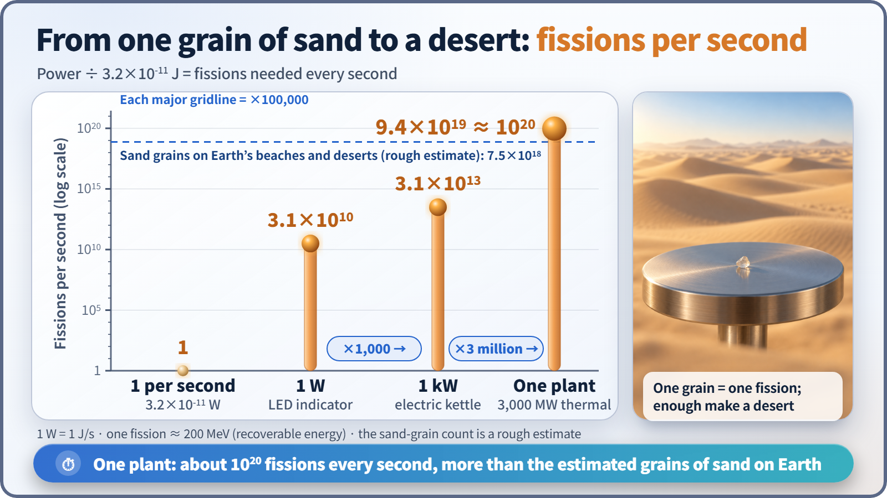
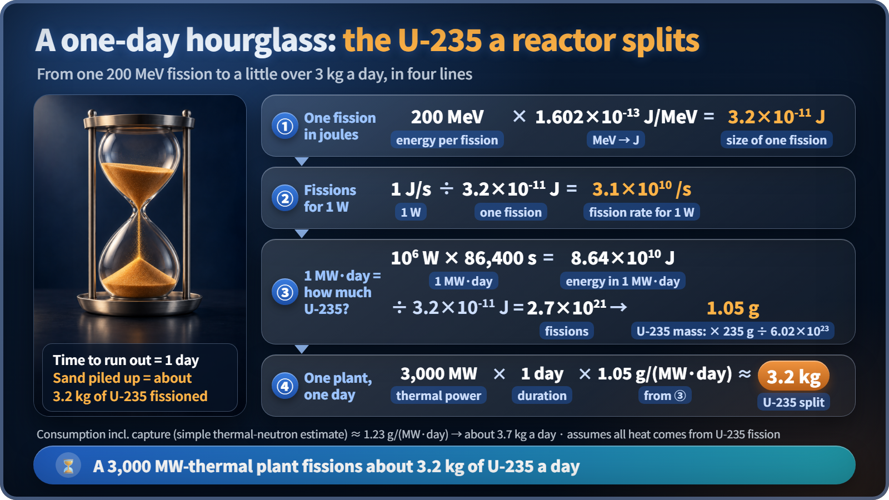

Nuclear Reactions & Fission · 032
One Grain of Sand, One Whole Desert — Getting a Feel for the Energy of a Single Fission
A single fission is smaller than the work of lifting a grain of sand. A power plant repeats it about 10²⁰ times a second.
One fission releases about 200 MeV, only about 3.2×10⁻¹¹ joules: roughly one-fiftieth of the work needed to lift a grain of sand by 1 mm. A power plant feels powerful because it repeats that tiny event about 10²⁰ times every second, which adds up to only a little over 3 kg of uranium-235 split per day. [1]
A quiz about sand
If you counted every grain of sand on Earth's beaches and deserts, how many would there be? Researchers at the University of Hawaii put a rough number on it: about 7.5×10¹⁸ grains. Now the second question: how many atoms does one large nuclear power plant split in a single second? [2]
The answer is about 10²⁰, more than ten times the estimated number of sand grains on Earth, every second. If splitting one atom releases so much energy, why does a plant need to split so many? Let's turn "the size of one fission" into something you can almost feel.
200 MeV in joules: how many zeros?
Textbooks say that when one uranium-235 nucleus splits, it releases about 200 MeV. One electronvolt (1 eV) is the energy an electron gains when pushed through 1 volt, only about 1.6×10⁻¹⁹ joules, and one MeV is a million times that. [3]
200 MeV × 1.6×10⁻¹³ J/MeV ≈ 3.2×10⁻¹¹ J: ten zeros after the decimal point before you reach a 3.
This 200 MeV is the share recovered as heat inside the reactor. A bit more is actually released, but the part carried off by neutrinos, ghostly particles that sail straight through the reactor, never becomes heat. That is why references quote values in the 190 to 200 MeV range. For a feel of the scale, 200 MeV is all we need. [4]
Less than lifting a single grain of sand
An ordinary grain of sand about 0.5 mm across weighs about 0.17 mg. The work needed to lift it just 1 mm (mass × gravitational acceleration × height) is about 1.7×10⁻⁹ J.
Divide one by the other and you get about 50: the energy of one fission is only about one-fiftieth of the work it takes to lift a single sand grain by 1 mm. The exact ratio depends on the grain size, but the conclusion holds: a single fission is far too small for anyone to notice.
So why is fission energy called huge? Because it is tens of millions of times larger than a chemical reaction involving a single atom (a few eV). "Enormous" is a statement about the ratio, atom against atom, not about the absolute amount from one event.
Climbing the ladder one step at a time
Going from one grain to a whole desert takes only one principle: fissions per second = power (W, joules per second) ÷ energy per fission (3.2×10⁻¹¹ J).

| Power | Everyday example | Fissions per second |
|---|---|---|
| 1 W | A small LED indicator | about 3.1×10¹⁰ (31.2 billion) |
| 1 kW | An electric kettle | about 3.1×10¹³ (31 trillion) |
| About 3,000 MW thermal | One power plant | about 9.4×10¹⁹, roughly 10²⁰ |
There is a common trap. A plant's "1,000 MW electric" and "3,000 MW thermal" are different numbers. Only about a third of a reactor's heat becomes electricity, so when you count fissions you must use the thermal output. The plant row above uses the thermal output of a 1,000 MW-electric class plant.
When the wind carries off one grain of sand, nobody notices; when a whole desert shifts, the landscape changes. An energy too small to measure becomes, stacked 10²⁰ times a second, the heat of a power plant that supplies an entire city.
So how many kilograms split in a day?
Nuclear engineering has a famous conversion factor: producing 1 MW of heat for one day (1 MW·day) takes the fission of about 1.05 g of uranium-235. [1]

One MW·day is 1,000,000 W × 86,400 seconds = 8.64×10¹⁰ J. Divided by 3.2×10⁻¹¹ J, that is about 2.7×10²¹ fissions. Since 6.02×10²³ atoms of uranium-235 weigh 235 g, a simple proportion gives about 1.05 g, matching the textbook value.
A plant with 3,000 MW of thermal output therefore splits 3,000 × 1.05 g ≈ about 3.2 kg of uranium-235 per day, about the weight of one and a half 2-liter bottles of water, or about 8×10²⁴ fissions.
Two points keep this accurate. First, "the amount split" and "the amount used up" differ: about 15% of the time, uranium-235 absorbs a neutron without splitting and becomes uranium-236. Counting capture, the uranium-235 that disappears is about 1.23 g per MW·day in a simple thermal-neutron estimate, or about 3.7 kg a day. Second, in a real plant, plutonium-239 that forms in the fuel during operation also splits and adds heat; the calculation assumes all heat comes from uranium-235. [5]
You may have seen the comparison that 1 g of uranium is equivalent to about 3 tonnes of coal. This calculation confirms the same fact from the other direction: with only a few kilograms split per day, fuel needs changing only once every few years.
Key takeaways
One fission: 3.2×10⁻¹¹ J, about one-fiftieth of lifting a grain of sand by 1 mm. 1 W: about 31.2 billion fissions per second. One power plant: about 10²⁰ fissions per second and a little over 3 kg of uranium-235 a day. Fission energy is "huge" because each tiny event is astonishingly large for a single atom, and there are countless atoms. The number on a plant's power meter is just another way of stating this fission rate.